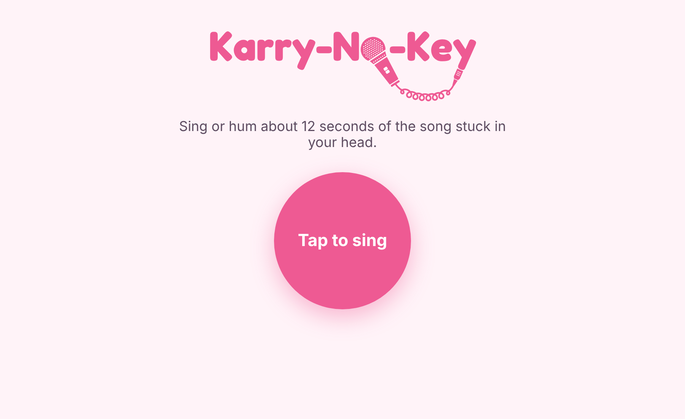
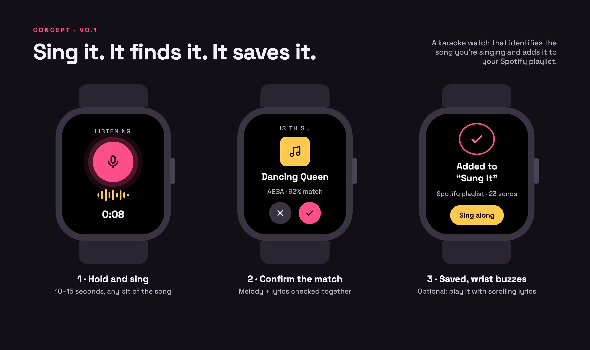
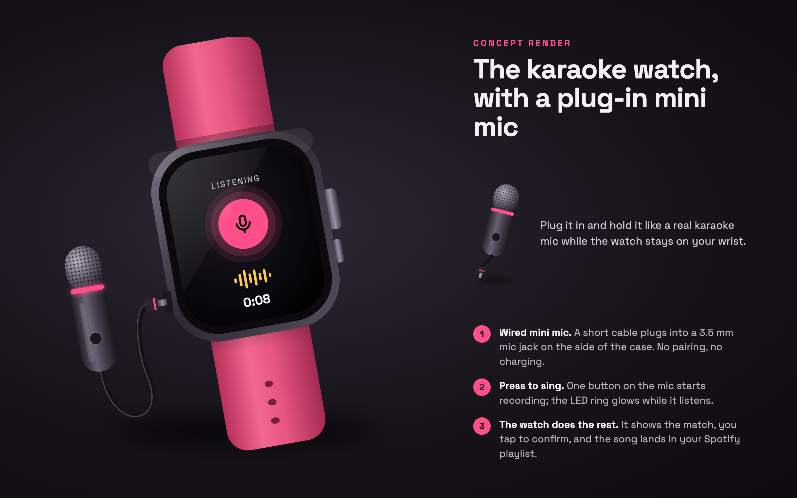

When you've got a song stuck in your head that you just can't help but hum outloud all day. All you need is to Karry-No-Key and be free! Sing into your wearable karaoke device, it recognizes the song instantly and lets you add to a Spotify playlist, all with a simple push of a button!
Current Status: Build 2: laptop version
Demo: The laptop app running locally, plus the happy path screen flow and product render

Build 2 laptop app running locally (laptop mic → server → ACRCloud). Song matching goes live once my ACRCloud account is unblocked.


Who is this for? Anyone who has a song stuck in their head and loves to sing it out loud on the go! For the purpose of a user testing group, this is going to be targeted at NYU Tisch performing arts students, a group of people who might enjoy the novelty of this device, aren’t afraid to sing out loud on the go and would potentially find this device useful for their social lives and their studying.
The painful "Before" workflow: Current ‘what’s that song?!’ offerings such as Shazam, work by matching recorded music and does not work for humming or singing a song. Apps like Google’s hum-to-search and SoundHound can, but they’re phone searches. No one is currently offering a solution in a fun, portable, wearable solution. Nothing turns singing for fun into a way to find and save songs, and karaoke machines and mini mics are bulky and don’t identify or save anything or offer the same level of discreet on-the-go singing!
The "After" workflow with this product: The Karry-No-Key offers a fun and unique way to get the song stuck in your head out of it, recognize what it is and add it to a Spotify playlist, it also offers a fun option of singing your favorite karaoke songs on the go.
Riskiest Assumption: The whole build! Parts not arriving in time, the engineer who is supporting me on the build not being able to execute the PRD and specs, the API limitations in linking to Spotify (they have recently tightened up developer mode access).
The main risk is that ACRCloud can correctly identify a song from 10–15 seconds of amateur singing recorded on a small wired mic. If it can’t get the right song in its top 3 guesses most of the time, the product doesn’t work.
How I’ll test it this week: record 5 students singing different songs on a laptop mic and run the clips through ACRCloud before any hardware arrives.
Who I’ll record and how I’ll reach them:
Simple Architecture: User sings into wired mini mic → Watch sends clip to Karry-No-Key server → ACRCloud matches the melody → Watch shows the top match with a confirm button → Server adds the song to the user’s Spotify playlist